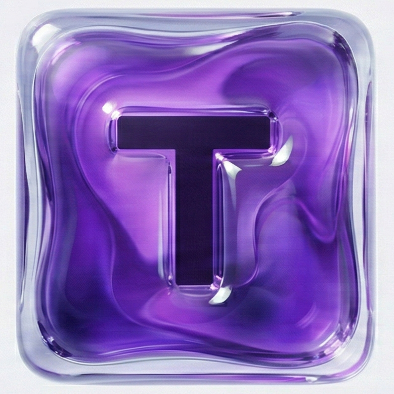

L#01: Wprowadzenie do tworzenia stron WWW.
W trakcie tych zajęć zapoznamy się z podstawami tworzenia stron internetowych, w tym HTML, CSS i JavaScript. Nauczysz się, jak stworzyć prostą stronę internetową i odpowiednio ją ostylować.
Głównym celem tych zajęć jest zrozumienie struktury strony internetowej oraz sposobu użycia CSS do jej stylizacji. Na koniec tej sesji stworzysz swoją pierwszą interaktywną stronę internetową.
Szczegółowa treść zajęć:

Wykonaj poniższe ćwiczenia, aby przećwiczyć:
// Przykład: Dodanie zdarzenia kliknięcia
const button = document.querySelector('button');
button.addEventListener('click', () => {
alert('Kliknięto przycisk!');
});W trakcie tych zajęć omówiliśmy podstawy tworzenia stron internetowych, w tym HTML, CSS i JavaScript. Powinieneś teraz mieć podstawową wiedzę na temat tworzenia i stylizacji stron internetowych.
Powrót do strony głównej| Nazwa | Opis | Data |
|---|---|---|
| Przykład 1 | Opis przykładu 1 | 28.02.2026 |
| Przykład 2 | Opis przykładu 2 | 01.03.2026 |